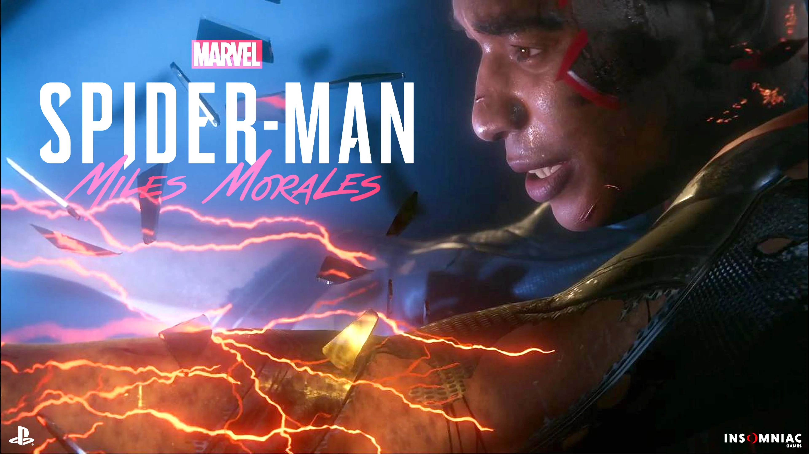

Fortnite
In Fortnite, players collaborate to survive in an open-world
environment, by battling other characters who are controlled either by
the game itself, or by other players. Violence is cartoonish, but some
characters and scenes might disturb younger players. The single-player
or co-operative mode (played with friends) involves fighting off
zombie-like creatures. But Fortnite’s most popular mode is its
standalone free-to-play multiplayer platform, Fortnite Battle Royale,
in which up to 100 players enter an online game, competing
individually or as part of squads of up to four, to be the last player
standing within a ever-decreasing battle arena.
Days Gone
Days Gone is an action-adventure survival horror video game developed
by SIE Bend Studio and published by Sony Interactive Entertainment. It
was released exclusively for the PlayStation 4 on April 26th 2019.Set
in a post-apocalyptic Oregon two years after a global pandemic, Days
Gone follows the story of Deacon St. John, a former member of a biker
gang.
Fifa 21
A new and improved training system which allows for weekly training
schedules and the ability to train players to play in different
positions, new stats such as match fitness and growth, an improved
youth academy system, more transfer options such as loan to buy deals,
and enhanced opposition AI.

Spiderman Miles Morales
Marvel's Spider-Man: Miles Morales is the follow up to 2018's
superhero game from Insomniac Games. In a much shorter story, players
taken on the role of the newest Spider-Man on the block, Miles
Morales, as he struggles to come into his own while defending his
neighborhood from threats.

Battlefield V
Battlefield V returns to the major conflict of World War II, with a
heightened focus on the lesser known battles of the war. The game is
designed to be the most immersive experience in the series, with
storylines ranging across major battles of the war. There is constant
action as you feel like your in battle and your life depends on it ,
with stunning graphics and non stop action fans of the series wil love
this game.